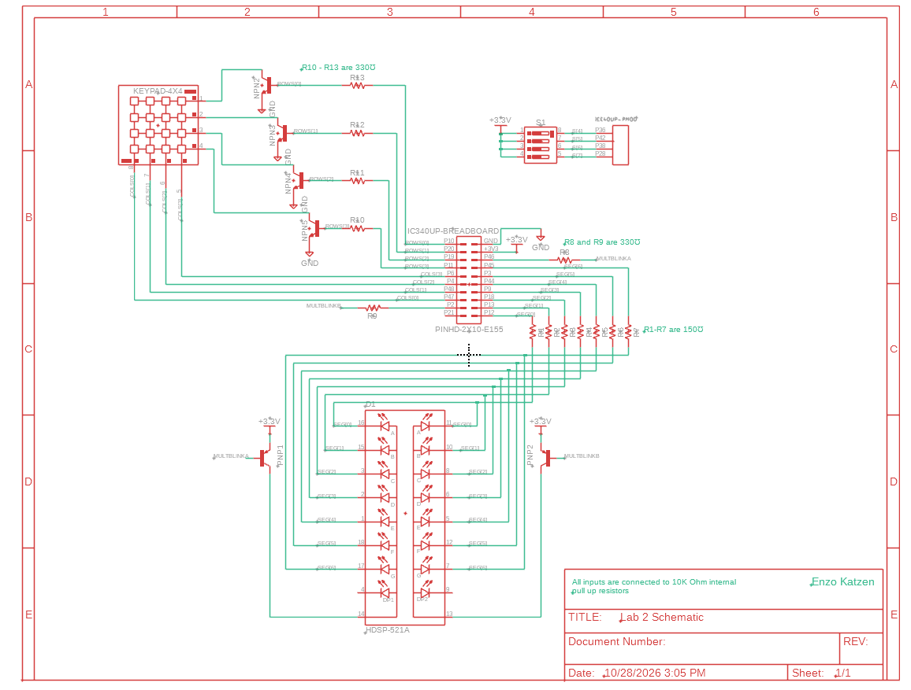
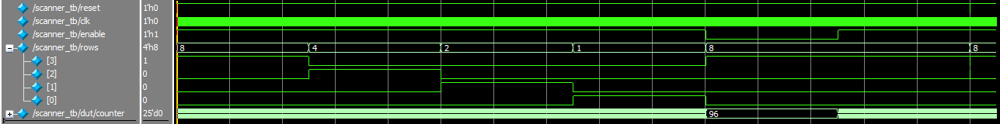
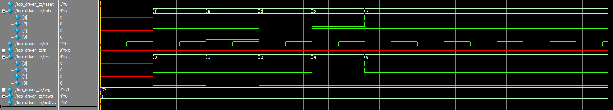
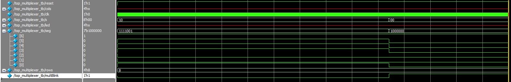

Lab 2: Multiplexed 7-Segment Display
Introduction
In this lab, a time-multiplexing scheme was implemented to drive two seven-segment displays with a single set of FPGA I/O pins. Additionally, a keypad was installed and it was verified that logic signals can pass through it by connecting its output signals to onboard LEDs.
Design and Testing Methodology
First, the design for multiplexing the seven segment display was made. This functioned by taking the inputs from 8 switches, and selecting between 4 of them based on the state of a counter. This counter had a flag at 96Hz, so each switch signal would be read once every 96Hz. This was sent to a decoder which choose which segments of a display to activate. That signal and the two flags were outputted: one flag would power one side of the seven segment display, and the other flag would power the other side. This approach was able to minimize the number of IO pins used and minimize the power drawn.
//Defining a multiplexer cycle to be at 96Hz
Counter #(.WIDTH(18), .MAX(18'd250000)) multiplexerCount(
.clk(clk),
.reset(reset),
.enable(1'b1),
.blink(multBlinkA)
);
logic [3:0] tempSwitches;
//As the cycle is 96Hz, each display is powered for 96 times a second, preventing blinking
assign tempSwitches = multBlinkA? s[3:0] : s[7:4]; //When high, the right four switches are used, when low, the left four switches are used
//assign seg = tempSeg; //When high, the display of lower signficance is used, when low, the last display of higher significance is used
assign multBlinkB = ~(multBlinkA);
sevenSeg segments(
.bitsIn(tempSwitches),
.diodeSeg(seg)
);
Next, the keypad scanner was designed. This used a counter that overflowed at 2Hz. Based on the current state of the counter, different pins would be activate. Therefore, the scanner would iterate through powering each row of the keypad, completing one full cycle every 2Hz.
logic [24:0] counter;
Counter #(.WIDTH(25), .MAX(25'd24000000)) scannerCount(
.clk(clk),
.reset(reset),
.enable(enable),
.counter(counter)
);
assign rows = ((counter <= 25'd6000000)&& reset)? 4'b1000: //As the scanner blinks, it will alternate between powering each row
((counter <= 25'd12000000) && reset)? 4'b0100: //As the scanner swaps twice per scannerBlink cycle, it will swap rows at 8Hz
((counter <= 25'd18000000) && reset)? 4'b0010: //So it will complete a full cycle every 1/2 second, or 2Hz
((counter <= 25'd24000000) && reset)? 4'b0001:
(~reset)? 4'b1000 : 4'b1000; //At reset, set to starting state
Following this, the output columns of the keypad would be taken as the inputs. Based on which buttons were pressed, various columns of the keypad would be shorted to the rows. Based on the columns that were powered, various LEDs would be activated. Depending on which buttons were pressed, this led to a “cycling” appearance as the rows were not constantly powered.
Lastly, the verilog implementation was tested using top level and module level testbenches.
Technical Documentation
The source code for the project can be found in the associated Github repository.
Schematic

Figure 1 shows the physical layout of the design. Internal 100 k\(\Omega\) pullup resistors were used on all inputs to ensure the pins would not be floating. The on board LEDs were connected using a 1 k\(\Omega\) current-limiting resistor to ensure the output current (~2.6 mA) did not exceed the maximum output current of the FPGA I/O pins. The seven segment displays were driven at 3.3V so the reverse voltage from the FPGA I/O pins would match. The seven segment displays were connected using a 150 \(\Omega\) current limiting resistor to ensure the output current does not exceed the maximum drain current of the FPGA I/O pins. A resistor was needed for each segment to maintain even current (and brightness) across all segments.
Results and Discussion
This design was able to achieve all tasks. In both simulation and on the physical FPGA, the seven segment multiplexing worked properly without dimming and the keypad scanner was able to meet all specified standards.
Testbench Simulation
To keep the waveforms legible, the automatic test benches were split into separate test benches for each submodule and their respective top-level connections. The results of the test benches are shown below.

# PASSED! The scanner behaves as desired at time: 4200.
# PASSED! The scanner behaves as desired at time: 12504054200.
# PASSED! The scanner behaves as desired at time: 25008104200.
# PASSED! The scanner behaves as desired at time: 37512154200.
# PASSED! The scanner behaves as desired at time: 50016204200.
# PASSED! The scanner behaves as desired at time: 62520254200.
# PASSED! The scanner behaves as desired at time: 75024306200.

# PASSED! The scanner LED driver behaves as desired at time: 42000.
# PASSED! The scanner LED driver behaves as desired at time: 62000.
# PASSED! The scanner LED driver behaves as desired at time: 83000.
# PASSED! The scanner LED driver behaves as desired at time: 104000.
# PASSED! The scanner LED driver behaves as desired at time: 125000.
# PASSED! The multiplexer assigned seg behaves as desired at time: 42000.
# PASSED! The multiplexer blinker behaves as desired at time: 42000.
# PASSED! The multiplexer assigned seg behaves as desired at time: 62000.
# PASSED! The multiplexer assigned seg behaves as desired at time: 5208396000.
# PASSED! The multiplexer blinker behaves as desired at time: 5208396000.
# PASSED! The multiplexer assigned seg behaves as desired at time: 5208417000.
# PASSED! The multiplexer assigned seg behaves as desired at time: 5208437000.
# PASSED! The multiplexer assigned seg behaves as desired at time: 5208458000.Conclusion
This design was a successful implementation of a multiplexed seven segment display and a keypad scanner.
I spent a total of twelve hours working on this lab.
Calculations
First, to ensure that no transistor draws more current than can be handled by a pin, \(\frac{3.3-0.7}{.008} = 325\) ohm (approximated to 330 ohm) resistors were installed to current limit them at 8 mA, the max output from each pin. Next, to ensure that each segment draws 8 mA, which can be sank by a GPIO pin, a current limiting resistor was calculated. As the transistor contributes a 0.3V voltage drop the resistor needed is a \(\frac{3.3-0.3-2}{.008} = 125\) ohm (approximated to 150 ohm) resistor. Based on my implementation, at most only 7 segments of the dual seven segment display and 1 row of the keypad could be powered at any time. Because of that, the maximum current sank at any time would be \(8mA * 7 + 8mA * 1 = 64mA\), which is under the 100mA max current sink of the entire board.
AI Prototype Summary
I used the free Claude to generate this code using the provided LLM prompts. Both prompts generated decent code, but when provided with the full context of the project, the LLM generated less code I already wrote. However, both prompts resulted in code the worked and functioned in my project.